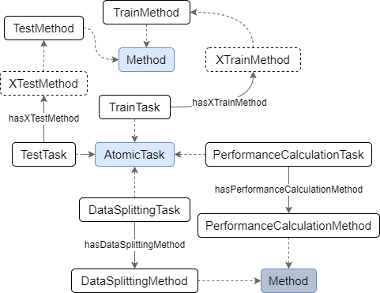

owl:Class that are sub-classes (rdfs:subClassOf) of AtomicTask and Method which are defined in the DS ontology. Here, each lower level sub-class refers to a specific ML task or method that trains or tests an ML model, calculates the model's performance, or splits the data. The boxes with dashed frames can be seen as templates for methods that train or test a specific ML model and the "X" in their name indicates the name of that model. Currently, Linear Regression, MLP, and k-NN are supported.
